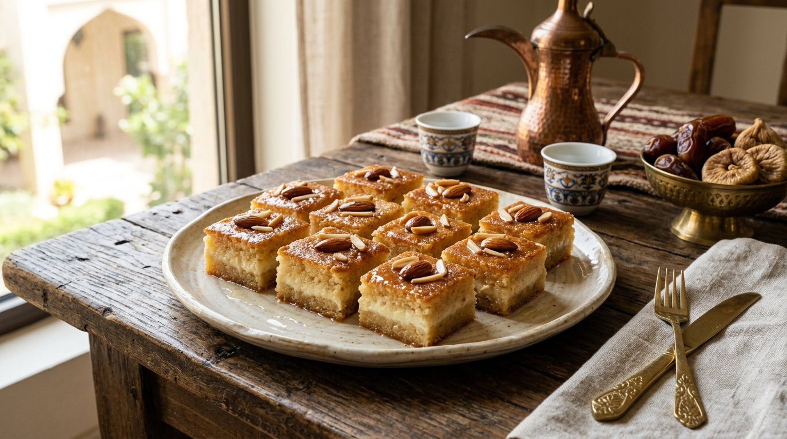

وصفات لذيذة
مناقيش الزعتر: وصفة بيتية سهلة واقتصادية خطوة بخطوة
طريقة مناقيش الزعتر في البيت بمقادير موزونة: عجينة طرية، تخمير صحيح، خلطة زعتر متوازنة وخبز على حرارة مرتفعة.
طريقة عمل بسبوسة بالقشطة خطوة بخطوة: المكونات، طريقة التحضير، القطر العطري، ونصائح للحصول على بسبوسة طرية ناجحة.

البسبوسة من أقدم الحلويات الشرقية وأكثرها محبة عند الجميع، لكنها عندما تكتسي بطبقة من القشطة تتحول من حلى بسيط إلى تحفة تليق بأفخم الضيافات. هذه الوصفة مضبوطة ومجربة: قوام هش رطب، طبقة قشطة مخملية، وقطر معطر بماء الزهر.
بسبوسة القشطة حلى يجمع بين البساطة والفخامة: مكونات متوفرة، خطوات واضحة، ونتيجة تخطف الأنظار. جربها في أقرب ضيافة، ولاحظ كيف تختفي من الصينية في دقائق — هذه علامة الوصفة الناجحة.
إن تعذّرت القشطة، استخدم جبنًا كريميًا مخفوقًا مع قليل من الكريمة. إضافة ماء الزهر أو ماء الورد للقطر تعطي عطرًا شرقيًا أصيلًا. وزّع القطر والقشطة وهي دافئة كي يتشربا جيدًا، وزيّن باللوز أو الفستق حسب التفضيل.
طريقة مناقيش الزعتر في البيت بمقادير موزونة: عجينة طرية، تخمير صحيح، خلطة زعتر متوازنة وخبز على حرارة مرتفعة.
وصفة شوربة العدس التقليدية خطوة بخطوة: المكونات، طريقة التحضير، أسرار القوام الكريمي والنكهة، وأخطاء شائعة يجب تجنبها.
طريقة عمل كيكة البرتقال الهشة بدون فرن باستخدام القدر: مكونات بسيطة، خطوات واضحة، ونصائح للحصول على كيك رطب وهش.